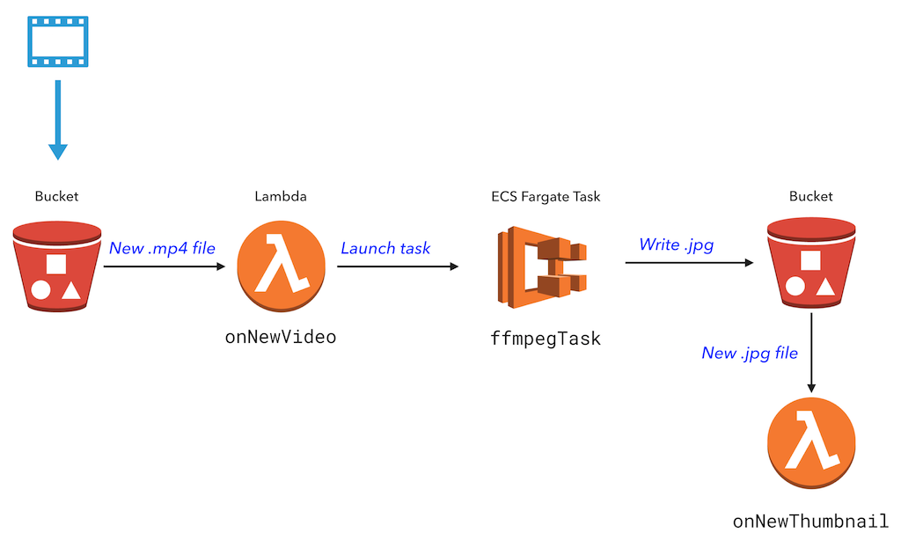
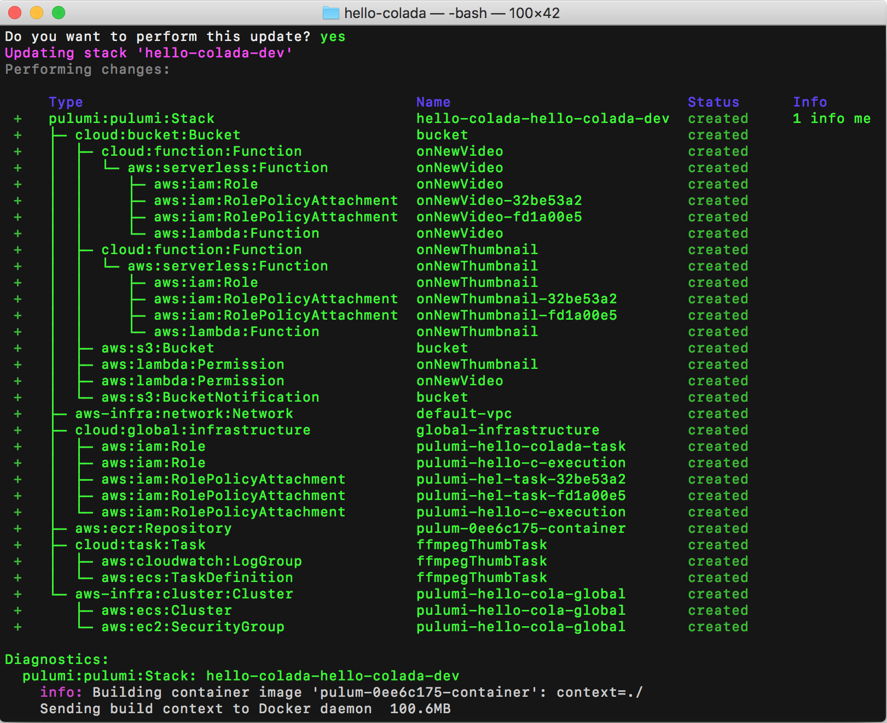
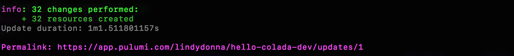
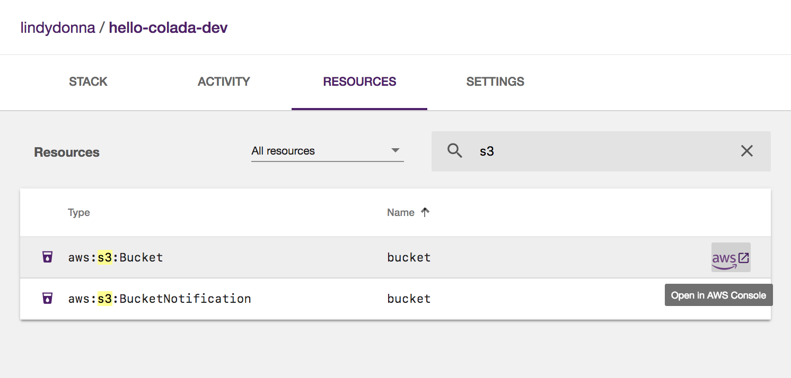
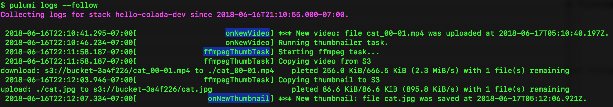

Build a Video Thumbnailer with Pulumi using Lambdas, Containers, and Infrastructure on AWS

Pulumi makes it easy to build cloud applications that use a combination of containers, lambdas, and connected data services and infrastructure: Colada apps.
An example of a Colada app is extracting a thumbnail from a video. A serverless function can only run for 5 minutes, so we’ll run a container in AWS Fargate to do the video processing.
In this app, a Lambda function is triggered whenever a new video is uploaded to S3. This function launches a task in Fargate that uses FFmpeg to extract a video thumbnail. A second Lambda function is triggered when a new thumbnail has been created.
This post was inspired by a blog post from Serverless, Inc that shows how to combine AWS Fargate and Lambda for a long-running process. Let’s see how a similar app would be implemented in Pulumi entirely in code.

Setup
If this is your first time using Pulumi, go to https://app.pulumi.com and sign in with GitHub.
Then, run the following command to install the Pulumi CLI:
$ curl -fsSL https://get.pulumi.com/ | sh
If you’re on Windows, run this:
@"%SystemRoot%System32WindowsPowerShell
1.0powershell.exe" -NoProfile -InputFormat None -ExecutionPolicy Bypass -Command "iex ((New-Object System.Net.WebClient).DownloadString('https://get.pulumi.com/install.ps1'))"
SET "PATH=%PATH%;%USERPROFILE%.pulumiin"
You’ll deploy this app to your own AWS account, so follow the steps to configure your AWS account.
Make sure you have Node.js installed, with a version of 6.10.x or later.
Finally, make sure Docker is installed and running.
Create the App
We’ll create a Pulumi project, define the infrastructure and app code in JavaScript, and create a Dockerfile for the Fargate task.
First, to create a new Pulumi project, run the following commands:
mkdir hello-colada && cd hello-colada
pulumi new aws-javascript
This creates a new project in the hello-colada directory.
Second, replace the contents of index.js with the following:
const cloud = require("@pulumi/cloud-aws");
// A bucket to store videos and thumbnails.
const bucket = new cloud.Bucket("bucket");
const bucketName = bucket.bucket.id;
// A task which runs a containerized FFMPEG job to extract a thumbnail image.
const ffmpegThumbnailTask = new cloud.Task("ffmpegThumbTask", {
build: "./", // folder containing the Dockerfile
memoryReservation: 128,
});
// When a new video is uploaded, run the FFMPEG task on the video file.
// Use the time index specified in the filename (e.g. cat_00-01.mp4 uses timestamp 00:01)
bucket.onPut("onNewVideo", async (bucketArgs) => {
console.log(`*** New video: file ${bucketArgs.key} was uploaded at ${bucketArgs.eventTime}.`);
const file = bucketArgs.key;
const thumbnailFile = file.substring(0, file.indexOf('_')) + '.jpg';
const framePos = file.substring(file.indexOf('_')+1, file.indexOf('.')).replace('-',':');
await ffmpegThumbnailTask.run({
environment: {
"S3_BUCKET": bucketName.get(),
"INPUT_VIDEO": file,
"TIME_OFFSET": framePos,
"OUTPUT_FILE": thumbnailFile,
},
});
console.log(`Running thumbnailer task.`);
}, { keySuffix: ".mp4" });
// When a new thumbnail is created, log a message.
bucket.onPut("onNewThumbnail", async (bucketArgs) => {
console.log(`*** New thumbnail: file ${bucketArgs.key} was saved at ${bucketArgs.eventTime}.`);
}, { keySuffix: ".jpg" });
// Export the bucket name.
exports.bucketName = bucketName;
This code uses cloud.Task, a high-level, convenient component for
working with containers. The component automatically provisions a
container registry instance in ECR, runs a Docker build, and saves the
Docker image to the provisioned ECR instance. It also defines an ECS
task and configures it to use the built image. All this in just 4 lines
of code!
Next, in the same directory, create a Dockerfile with the following
contents. We’ll use an existing FFmpeg container and install the AWS
CLI. When the container is started, it copies the video file from S3,
runs ffmpeg, and copies the output back to S3.
FROM jrottenberg/ffmpeg
RUN apt-get update &&
apt-get install python-dev python-pip -y &&
apt-get clean
RUN pip install awscli
WORKDIR /tmp/workdir
ENTRYPOINT
echo "Starting ffmpeg task..." &&
echo "Copying video from S3" &&
aws s3 cp s3://${S3_BUCKET}/${INPUT_VIDEO} ./${INPUT_VIDEO} &&
ffmpeg -v error -i ./${INPUT_VIDEO} -ss ${TIME_OFFSET} -vframes 1 -f image2 -an -y ${OUTPUT_FILE} &&
echo "Copying thumbnail to S3" &&
aws s3 cp ./${OUTPUT_FILE} s3://${S3_BUCKET}/${OUTPUT_FILE}
Install the @pulumi/cloud-aws NPM package:
$ npm install --save @pulumi/cloud-aws @pulumi/cloud
Finally, configure Pulumi to use AWS Fargate. Note that, currently,
Fargate is available only in us-east-1, us-east-2, us-west-2,
and eu-west-1.
$ pulumi config set cloud-aws:useFargate true
That’s it! Now, let’s deploy the app.
Deploy the App
To deploy both the infrastructure and app code, we’ll
run pulumi update. This command first shows a preview of all the
resources that will be created and prompts for confirmation. During the
preview phase, Pulumi invokes docker build.
Choose the “yes” option to deploy to AWS. This will take about 5 minutes. Pulumi automatically builds and provisions an AWS container repository in ECR, builds the Docker container, and places the image in the repository. This all happens automatically and does not require manual configuration on your part.

At the end of the update, you’ll see a link to the Pulumi Console that shows the details of the deployment.

Go to the Resources tab and filter to S3 resources. Then, on the S3 bucket, click the link to go to the AWS Console.

Upload a Video
Upload an .mp4 video to your S3 bucket, making sure to encode the
desired time index in the filename. For instance,
use myvideo_00-02.mp4 to extract the frame at 0 minutes and 2 seconds.
You can use this video of my
cat,
which you should save as cat_00-01.mp4.
Upload this video in the S3 console. Or, use the AWS CLI along with
the pulumi stack output command:
$ aws s3 cp cat_00-01.mp4 s3://$(pulumi stack output bucketName)
upload: cat_00-01.mp4 to s3://bucket-3a4f226/cat_00-01.mp4
To see what the app is doing, use the pulumi logs command, with
the --follow or -f parameter. This command aggregates all the logs
for your compute, so the logs for the Lambda function and the
Fargate task are all in one place!
 Once the thumbnail has been generated, either view it in the S3 console, or download it with the AWS CLI:
$ aws s3 cp s3://$(pulumi stack output bucketName)/cat.jpg .
download: s3://bucket-0c91106/cat.jpg to ./cat.jpg
Clean Up
To clean up the resources we’ve provisioned, run pulumi destroy.
Next Steps
In this post, we saw how easy it is to use containers and serverless functions in one application. With Pulumi, you get the best of both worlds, and don’t have to choose one or the other.
The sample code for this post is available in the Pulumi examples repo on GitHub.
For a version of this sample that includes AWS Rekognition, see the Video Thumbnailer with Machine Learning JavaScript example.
Posted on